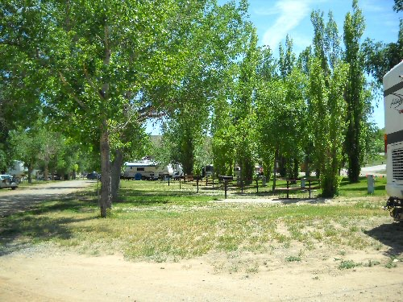
Full-hookup RV sites
30/50 amp full hookups in the B and C rows, plus a corner site. Picnic tables at most sites and lots of shade.
from $65 / night
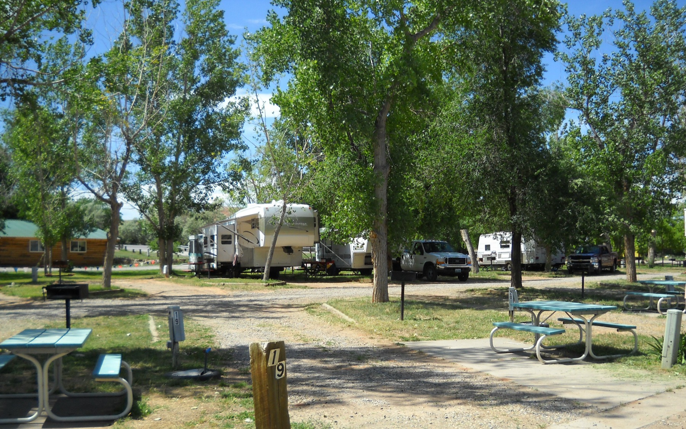
Just north of Thermopolis · Big Horn Basin, Wyoming
Shady RV sites, a log cabin and tent spots around the largest mineral pool in Wyoming, fed day and night by a hot well first struck in 1918. Ten minutes from Hot Springs State Park and downtown Thermopolis.
Welcome
A perfect place to stop and play for a day, a good weekend getaway, or a central base for day trips around the Big Horn Basin.
Wide roadways make it easy to back into your site. Lots of grass and big cottonwoods keep the park cool, there are pull-through sites, and the sites leave room for family gatherings and your recreational toys. The best use of your time here? Sheer relaxation.
The Thermopolis fairgrounds are about 8 minutes away, with rodeos, horse events and shows through the season. Remember to book early for holiday weekends.
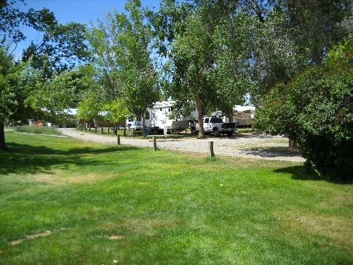
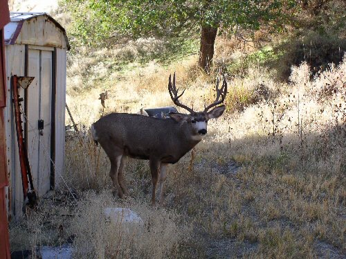
The mineral pool
The pool is fed by the Sacajawea Well. Its hot mineral water has built up a colorful travertine cone right in the park, and it keeps the pool fresh: the whole pool turns over about every 11 hours.
Lounge chairs and benches line the east side, a wall at the end of the pool gives privacy and blocks the wind, and the showers and bath house are right next to the water. A handicap ramp lets everyone get in. Evenings are great.
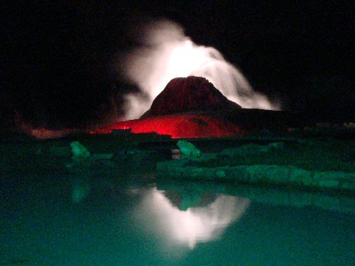
History of the well
C. F. Cross drilled the well searching for oil. Instead he struck hot mineral water, and the pressure was so great that it destroyed the derrick when it came in.
The well was named for Sacajawea, the Shoshone woman who guided Lewis and Clark on their expedition. The land here was once part of the Shoshone Indian Reservation.
Minerals left behind by the flowing water slowly formed the colorful travertine formation you see today. Please keep off the formations: it takes nature six months to heal the scar of one footprint.
The well still flows at about 1.3 million gallons of 128 °F water every 24 hours, filling a pool kept between 92 and 106 °F. Under the oldest Chinese elm in Wyoming, the “liars’ tree”, guests swap stories. Careful: the tree has ears.
Where you'll stay

30/50 amp full hookups in the B and C rows, plus a corner site. Picnic tables at most sites and lots of shade.
Compact sites with 30 amp and water, and an electric & water tent site on the grass.
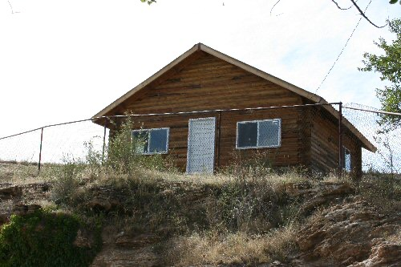
No camper? Book the cabin or the lodge and spend your evenings in the hot pool.
Starting nightly rates as listed on Campspot (November 2026). Rates vary by date. See all sites, amenities & rates →
Around the park
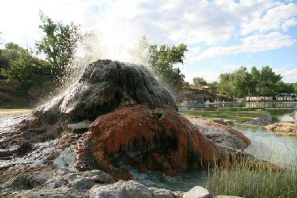
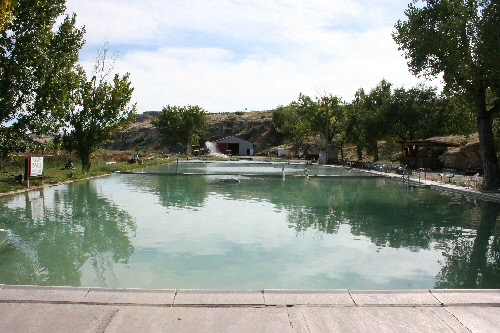
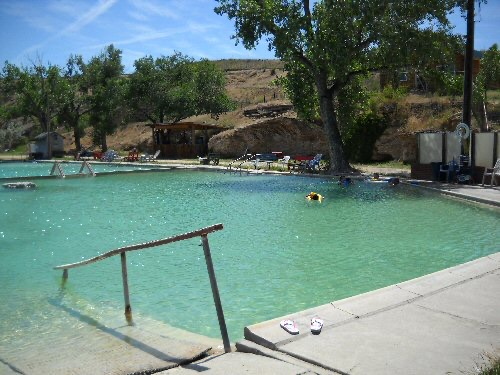
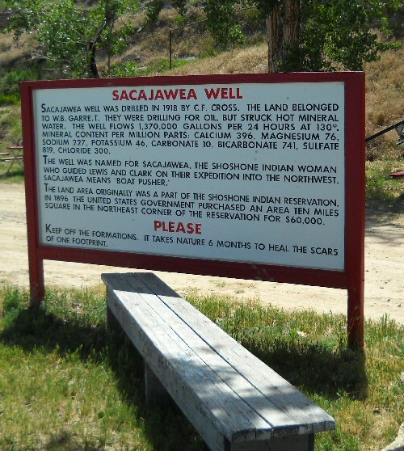
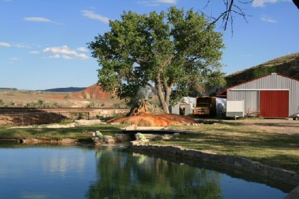
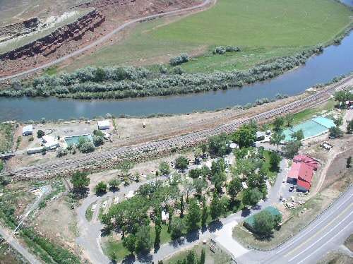
Your base camp
Thermopolis sits at the south end of the Big Horn Basin, a natural stop on the way to the national parks.
Good to know
The pools run from about 92 to 106 °F, with three temperature levels. The Sacajawea Well itself flows at about 128 °F.
Yes. There is a handicap ramp into the pool so everyone can enjoy the water.
Yes, the park is pet-friendly.
Yes, 10% for military when you book on Campspot with the code SALUTE. Bring your ID to check-in.
Yes. Monthly long-stay rates are available. Call the office at 307-864-3265.
About 170 miles to Yellowstone National Park, 201 miles to Grand Teton and 232 miles to Jackson Hole.
Plan your stay
Pick your dates and site online on Campspot, or call the park office.
307-864-3265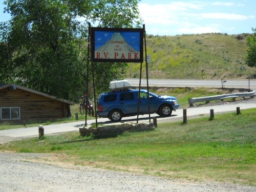